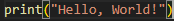

Python 언어
파이썬은 범용 프로그래밍 언어로, 코드가 간결하고 읽기 쉬우며 다양한 분야에서 널리 사용됨
Python 언어 특징
장점 1. Python은 문법이 간결하고 읽기 쉬워서 초보자에게 적합
장점 2. Python은 다양한 라이브러리와 프레임워크를 제공하여 생산성을 높임
장점 3. Python은 다중 패러다임을 지원하여 다양한 프로그래밍 스타일을 적용 가능
장점 4. Python은 인터프리터 언어로서 즉시 실행 및 테스트가 가능
단점 1. Python은 느린 실행 속도를 가질 수 있음
단점 2. Python은 모바일 컴퓨팅에서의 활용이 제한적일 수 있음
Python 언어 활용분야
웹 애플리케이션 개발
데이터 분석 및 과학
인공지능 및 머신러닝
자동화 스크립트
게임 개발
데스크탑 애플리케이션
네트워크 서버
Python 언어 활용 기본예제
